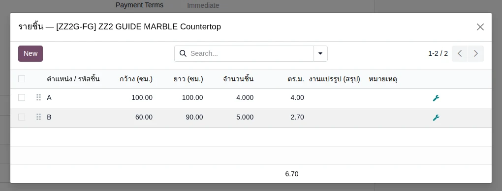
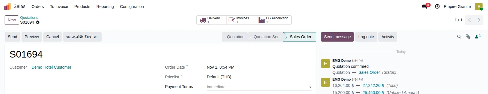
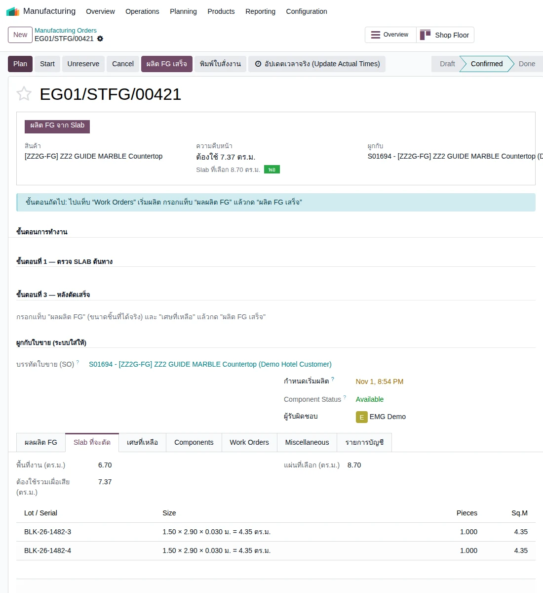
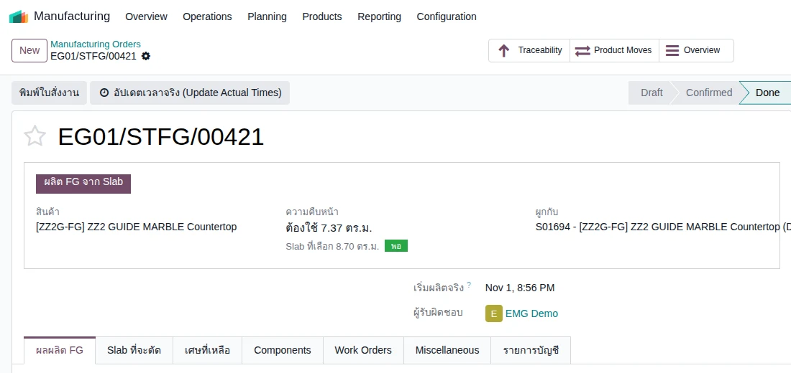
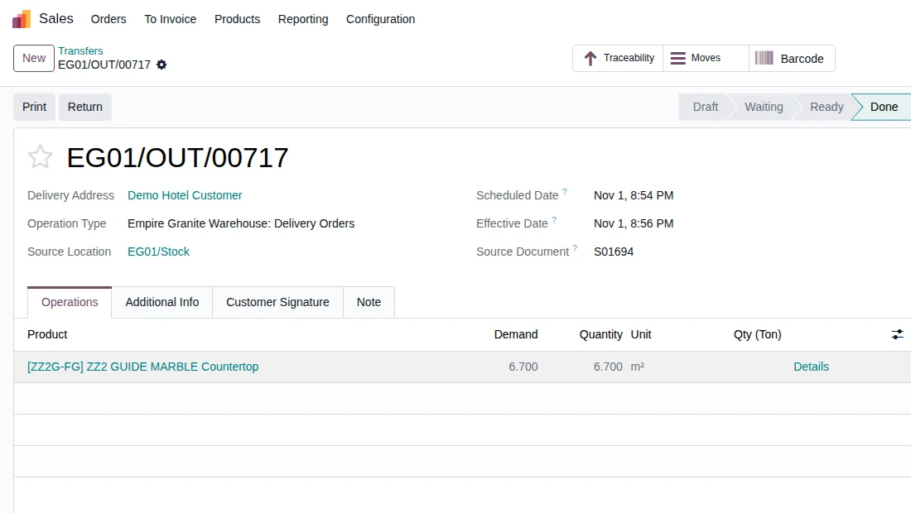
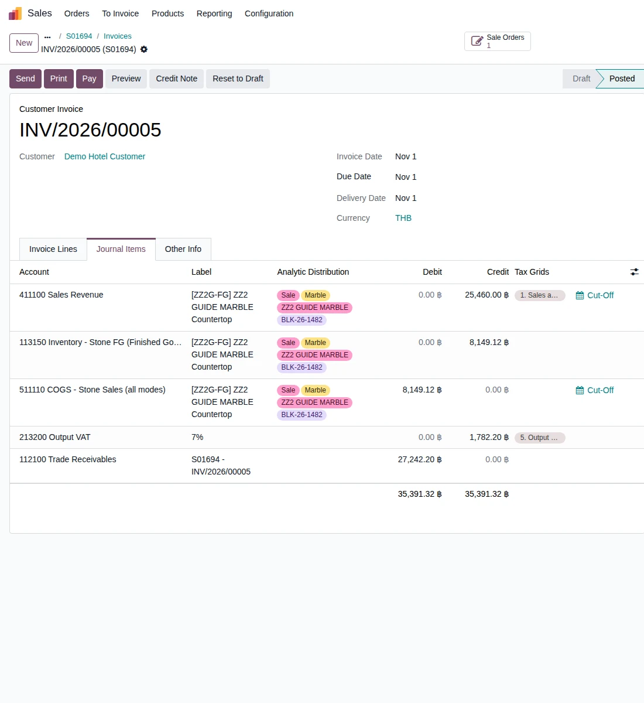

Empire Stone × Empire Granite — QA
Golden Path — FG: ขายแผ่นตัดตามขนาด ผลิต ส่งของ และใบแจ้งหนี้
อัปเดตล่าสุด: 1 พฤศจิกายน 2569 (2026-11-01) · รันจริงบน eg-tst ผ่านหน้าจอ ใช้ผู้ใช้ emgdemo บริษัท Empire Granite
เอกสารเดียวสำหรับเรื่อง FG แผ่นตัดตามขนาด: ใบเสนอราคาระบุรายชิ้น · ยืนยันใบสั่งขายและเตรียมงานผลิต · ผลิตเสร็จ · ส่งของ · ใบแจ้งหนี้และต้นทุนขาย ทุกเคสเขียนให้ผู้ใช้ไม่เทคนิคทำตามได้ ไม่รวมเคสกรอกผิดหรือดักข้อผิดพลาด ข้อมูลตัวอย่างขึ้นต้นด้วย ZZ
6Test Case ทั้งหมด
3หมวด
6High Priority
0Medium Priority
0Low Priority
เอกสารนี้เป็นฉบับใหม่ของเรื่อง FG แผ่นตัดตามขนาด
- ทำตามทีละขั้นด้วยคู่มือ คู่มือกดตาม FG (มีเหตุผลของแต่ละค่าที่กรอก) · เอกสารนี้ใช้ตรวจผล
- ต้องทำ คู่มือกดตาม Setup ระบบ ตอน 1–2 มาก่อน (หมวด FG ต้องตั้ง FIFO และ Perpetual) และมี Slab Available อย่างน้อย 2 แผ่นจาก Golden Path Block
- ขอบเขต 6 เคส: ขายและเตรียมงานผลิต 3 เคส · ผลิตและส่งของ 2 เคส · ใบแจ้งหนี้และต้นทุน 1 เคส
- Golden Path เดิมของ FG (Countertop และ Custom FG) ไม่ได้แก้ ยังใช้ได้ตามเดิม
A. ขายและเตรียมงานผลิต
ใบเสนอราคา FG ระบุรายชิ้น · ยืนยันใบสั่งขาย · เตรียมใบสั่งผลิต · 3 test cases
| TC ID | Scenario | Precondition | Steps | ข้อมูลตัวอย่าง | Expected Result | Priority | ภาพหน้าจอ |
|---|---|---|---|---|---|---|---|
| TC-GP-FG-01 | ทำใบเสนอราคา FG ระบุรายชิ้น (กว้าง × ยาว × จำนวน) ขนาดรายชิ้นกรอกเป็น ซม. · กรอกทีละช่อง กด Tab และรอให้ตัวเลขเข้าก่อนช่องถัดไป · จำนวนของบรรทัดสินค้าเปลี่ยนเป็นพื้นที่รวมของรายชิ้นเอง |
ทำคู่มือ Setup ระบบตอน 2 แล้ว มีสินค้า ZZ2 GUIDE MARBLE Countertop (3,800 บาทต่อ ตร.ม.) · มีลูกค้า Demo Hotel Customer |
|
Customer = Demo Hotel Customer · ZZ2 GUIDE MARBLE Countertop · A = 100 × 100 ซม. × 4 ชิ้น · B = 60 × 90 ซม. × 5 ชิ้น | ตารางรายชิ้น A = 4.00 ตร.ม. · B = 2.70 ตร.ม. · รวม 6.70 · บรรทัดสินค้า Quantity 6.700 m² × 3,800.00 · ก่อน VAT 25,460.00 · VAT 7% 1,782.20 · รวม 27,242.20 | High |  |
| TC-GP-FG-02 | กด Confirm ใบสั่งขาย ระบบสร้างใบสั่งผลิตและใบส่งของให้เอง ระบบเตือน "ยืนยัน Confirm ทั้งที่ยังไม่มีของ" เพราะ FG ผลิตตามออเดอร์ ให้กด Confirm ต่อ |
ทำ TC-GP-FG-01 เสร็จแล้ว |
|
- | ใบสั่งขายสถานะ Sales Order (เช่น S01694) · ปุ่มสมาร์ท Delivery 1 และ FG Production 1 · ยอดคงเดิม 27,242.20 | High |  |
| TC-GP-FG-03 | เปิดใบสั่งผลิต ตรวจ Slab ที่ระบบเลือก ย้ายไปสถานีตัดแล้ว Confirm ต้องใช้ 7.37 ตร.ม. = 6.70 + เผื่อเสีย 10% · ระบบเลือก Slab ให้ 2 แผ่น (8.70 ตร.ม.) · ต้องกดย้ายไปสถานีตัดก่อน Confirm |
ทำ TC-GP-FG-02 เสร็จแล้ว · มี Slab ของ ZZ2 GUIDE MARBLE ที่ Available อย่างน้อย 2 แผ่น |
|
- | ใบสั่งผลิต (เช่น EG01/STFG/00421) Draft ก่อนกด · ต้องใช้ 7.37 ตร.ม. · Slab ที่เลือก 8.70 ตร.ม. (2 แผ่น แผ่นละ 1.50 × 2.90 × 0.030 ม. = 4.35 ตร.ม.) · หลัง Confirm สถานะ Confirmed และ Component Status Available | High |  |
B. ผลิตและส่งของ
ผลิต FG เสร็จ · ส่งของ · 2 test cases
| TC ID | Scenario | Precondition | Steps | ข้อมูลตัวอย่าง | Expected Result | Priority | ภาพหน้าจอ |
|---|---|---|---|---|---|---|---|
| TC-GP-FG-04 | ผลิต FG เสร็จ ระบบสร้างสต็อก FG ตามขนาดและลงต้นทุน ช่องขนาดในแท็บ ผลผลิต FG เป็นเมตร (1.00 = 100 ซม.) และช่องความหนาเป็น 0.00 ได้ ระบบใช้ความหนาของ Slab · ค่าแรง 6.70 × 1,500 = 10,050.00 ลงเป็นค่าใช้จ่ายค้างจ่ายตอนผลิตเสร็จ ไม่รวมในต้นทุนสต็อก FG · ยังไม่ได้ทดลองบันทึกเศษที่เหลือ |
ทำ TC-GP-FG-03 เสร็จแล้ว |
|
ผลผลิต: 1.00 × 1.00 จำนวน 4 (A) · 0.60 × 0.90 จำนวน 5 (B) | ใบสั่งผลิตสถานะ Done · Lot FG-EG01/STFG/00421-01 (1.00 × 1.00 × 0.03 ม. 4 ชิ้น) และ FG-EG01/STFG/00421-02 (0.60 × 0.90 × 0.03 ม. 5 ชิ้น) · ตรวจจากฐานข้อมูล: Slab 2 แผ่นมูลค่า 8,149.12 ย้ายเป็นสต็อก FG (เดบิต 113150 เครดิต 113120) · ค่าแรง 10,050.00 (เดบิต 511120 เครดิต 212300) | High |  |
| TC-GP-FG-05 | ส่งของ FG ให้ลูกค้า ระบบจองสต็อก FG ให้ใบส่งของเองตามขนาดที่ขาย ไม่ต้องเลือก Lot · ใบส่งของ FG ไม่ต้องสแกน Serial |
ทำ TC-GP-FG-04 เสร็จแล้ว |
|
ใบส่งของ EG01/OUT/00717 | ใบส่งของ Ready ก่อนกด (Demand 6.700 Quantity 6.700 m²) เป็น Done หลัง Validate · มูลค่าที่ตัดจากสต็อก 8,149.12 (ตรวจจากฐานข้อมูล) | High |  |
C. ใบแจ้งหนี้และต้นทุน
ออกใบแจ้งหนี้ ระบบลงต้นทุนขายให้ · 1 test case
| TC ID | Scenario | Precondition | Steps | ข้อมูลตัวอย่าง | Expected Result | Priority | ภาพหน้าจอ |
|---|---|---|---|---|---|---|---|
| TC-GP-FG-06 | ออกใบแจ้งหนี้และตรวจรายการบัญชี (รายได้ ต้นทุนขาย) ต้องตั้งหมวด FG เป็น FIFO + Perpetual ก่อน (คู่มือ Setup ตอน 1 ข้อ 1.5–1.6) ไม่เช่นนั้นไม่มีรายการต้นทุนขายในใบแจ้งหนี้ · กำไรขั้นต้น 25,460.00 − 8,149.12 − 10,050.00 = 7,260.88 บาท |
ทำ TC-GP-FG-05 เสร็จแล้ว |
|
ใบสั่งขาย S01694 · Regular invoice | ใบแจ้งหนี้ (เช่น INV/2026/00005) Posted · 6.700 m² × 3,800.00 · ก่อน VAT 25,460.00 · VAT 1,782.20 · รวม 27,242.20 · Journal Items: เดบิต 112100 ลูกหนี้ 27,242.20 · เครดิต 411100 รายได้ขาย 25,460.00 · เครดิต 213200 VAT ขาย 1,782.20 · เดบิต 511110 ต้นทุนขาย 8,149.12 · เครดิต 113150 สต็อก FG 8,149.12 | High |  |